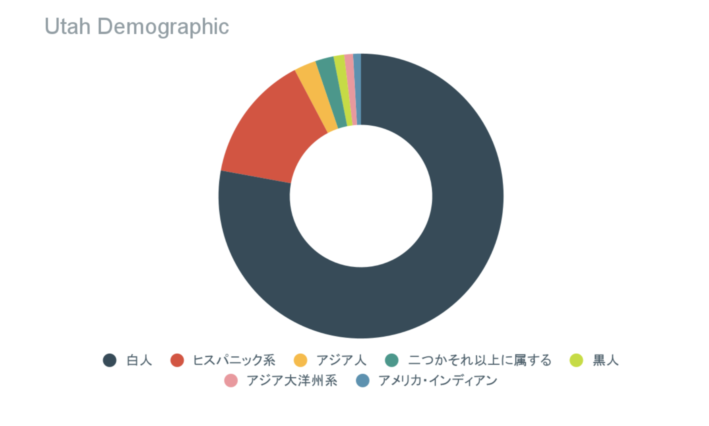

※「二つかそれ以上に属する」とは、自身のアイデンティティを二つかそれ以上のカテゴリーに属すると考えている人の事です。
Utah
State and County Annual Population Estimates by Single-Year of Age, Sex, and Race/Ethnicity:
2010-2019
グラフから見てわかる通り、白人とヒスパニックが多いです。地域によっては白人がほとんどの場所もあります。
ユタ州、ソルトレイクシティはモルモン教の本部で、ユタの人口のおよそ55％がモルモン教に属しています。モルモン教の正式名称は末日聖徒イエス・キリスト教会／The Church of Jesus
Christ of Latter-day Saintsで、プロテスタントの一派です。真っ白い教会が特徴的です。聖書とともに、モルモン経／The Book of
Mormonを信じています。禁酒・禁煙等生活習慣についての教えが多いことや、世界中に伝道師を派遣することで知られています。ただ、若い年代だとモルモン教徒でもフレキシブルな考え方をもっている人や、親はモルモン教だけど自分はそうではないという人などもいます。モルモン教徒は基本的に優しいので仲良くなりやすいです。もし勧誘された場合は、興味がない事を伝えれば大丈夫でしょう。
ちなみに、東京の港区にも末日聖徒イエス・キリスト教会の寺院があります。生活への影響はないですが、日曜日は多くのお店が閉まっているのでお出かけには少し注意しましょう。
Major
Religions Practiced in Utah - WorldAtlas
モルモン教とは
- コトバンク (kotobank.jp)
詳しく知りたい方はこちらをどうぞ 碁盤の目
公用語は英語。
1940年代以降の大統領選挙ではほぼ毎回共和党が勝利していて、銃規制に反対、中絶に反対など保守的な政治情勢が目立ちます。また、連邦・州議会議員の多くもモルモン教徒で、政治と宗教のつながりが強いことが分かりますね。
ユタ州事情 | 在デンバー日本国総領事館
(emb-japan.go.jp)
主要産業としては鉱業、農業、ハイテク産業、航空宇宙産業そして観光業が挙げられます。米資産管理サービス「ウォレットハブ」が2016年に発表した“全米で最もイノベーションに適した州”ランキングで、ユタ州は第4位に入っています。また、ユタ州には5つの国立自然公園があることに加え、2002年には冬季オリンピックの会場となるなど、自然を売りにした観光業も盛んです。
全米で最もイノベーションに適した州は？ | Forbes JAPAN（フォーブス
ジャパン）
豆知識
州都のソルトレイクシティにはケンタッキー・フライド・チキンの最初のフランチャイズ加盟店があります。
アメリカの西海岸寄り内陸側に位置しています。標高が高いことも特徴です。ユタ州の平均標高は1,860ｍで、富士山の3と4合目の中間くらいです。分かりにくくてごめんなさい。気候はほんとに砂漠気候で、一日の気温差が激しく適切な服装選びが難しい事が特色です。また、大陸プレートの動きの関係で化石がよく発掘されます。ユタ大学の近くにユタ自然史博物館があり、実際に化石を処理している作業を窓ガラス越しに見学することができます。
冬
1月の平均最高気温は2℃、平均最高気温は－5℃。乾燥しているので東京と比べると体感温度は高いです。また、肌と唇がカサカサになります。建物内は暖房が効いているので暖かいジャケットがあると調節ができていいです。日没は午後5時半から6時にかけてです。雪がふわふわしていて山のほうでは特にたくさん降るのでシーズンパスを購入して毎日、毎週のようにスキーやスノーボードに行く人がたくさんいます。ソルトレイクは周囲を山に囲まれた盆地になっているので冬場になると大気汚染がたまり煙たい日が多くなります。
夏
7月の平均最高気温は34℃、平均最低気温は20℃。意外と暑いので油断せずに夏服も準備しましょう。日没は夜8時半から9時までと日が長いです。筆者は楽しかったです。虫もほぼいないのがいいですね。
春・秋
基本的にとても過ごしやすい気温が続きます。なのでハイキングや国立公園巡りは春と秋が一番おすすめです。春はお花が、秋には美しい紅葉が楽しめます。ユタ州会議事堂付近では桜を見ることができます。標高の関係により場所によって紅葉のタイミングが異なるので見逃さないように注意です
バスやTraxと呼ばれるトラムが主な公共交通機関です。ユタ大学の学生であれば学生証がチケット代わりになります。TraxはRed、Blue、Greenの3つの路線しかなく、とてもシンプルで分かりやすいです。車社会なので、公共交通機関の本数や運転時間にリミットがあります。また、時刻になると終点まで行かずに途中で運転終了してしまうので気を付けてください！下記のURLで事前に調べてから利用するのがいいでしょう。車がない場合はUberを使用したり友達に送ってもらったりして移動することが多いです。Uberは安全と言えます。
Schedules and Maps
(rideuta.com)
チケットはバスの運転手、バス券売機、UTAアプリで購入可能です。料金やチケットの種類は以下のURLで詳しく確認できます。
Rider Info (rideuta.com)
ユタ大学キャンパスはとても広いので、キックスクーターやスケートボードなどで移動している学生がたくさんいます。坂が多いので電動のものを使用している確率が高いです。電動キックスクーターはLimeとBirdがスマホのアプリで乗り捨てができるサービスを提供しています。
治安ですが、ユタ州は他の州と比べてとても安全だといわれています。日中の単独行動や夜中のキャンパス内の移動は問題ないですが、暗くなってからキャンパスの外を一人で出歩くのは控えたほうがいいです。日が暮れてから出かけるなら友達と集団行動をしましょう。一緒に出かけるメンバーに不安があるのなら、親しい友人に自分の行き先を伝えたり、GPSを共有したり対策をとると安心です。女性はペッパースプレーといった護身アイテムを携帯する人もいます。
ユタ州にはナバホ族やユト族などネイティブアメリカンが生活をしていました。1847年になると東海岸から迫害されてきたモルモン教のパイオニアが定住しました。モルモン教のほとんどは欧州の各地から改宗してやってきたため、コスモポリタンな都市形成となりました。
ソルトレイクシティのTemple
Squareにあるソルトレイク寺院は、パイオニアが到着した際にブリガムヤングが教会の建設を宣言して実際に建てられた教会です。残念ながら、モルモン教徒でないと中に入ることはできません。2022年現在はまだ改装工事中ですが、クリスマスシーズンになるとライトアップが美しいと高い評判です。ユタ大学の付近にThis
is the
placeという当時のパイオニアの生活やソルトレイクの歴史を学べる体験型テーマパークがあります。モルモン教の歴史について興味がある人は訪れてみてください。また、ユタ州はアメリカ東西から建設が始まった大陸横断鉄道が結ばれた土地です。
Salt Lake City History | Utah.com | Utah.com
ちなみに保守的な州であるもののアジアンヘイトは見受けられず、平和に生活できます。
学校は9月から始まり、2学期制です。難易度を測る基準の一つとして授業の番号があります。大まかに1000、2000単位なら初級、3000、4000なら上級。5000以上は大学院レベルです。しかし、3年生でも5000レベルの授業をとる人もいるのでこの基準にとらわれることはないと思います。教授の評判を調べるにはRate My Professorというウェブサイトを参考にするといいです。全米の大学の教授の評価を見ることができます。パーティーが好きな国らしく、大学でも大規模なダンスパーティーやクラブナイトなど高頻度でバラエティに富んだイベントが開催されています。
空港から大学まではTrax、Uber、Express Shuttleの３つの方法があります。トラムは安いものの時間がかかることと乗り換えがあることが難点です。Uberは少々高いですが、事前に予約しておくと費用を抑えることができます。Express Shuttleとはタクシーのようなものですが安全性が高いです。しかし相乗りや時間帯などに値段が大きく左右され、＄60にも上ることもあります。
水道水は水道水の味がしますが、そのまま飲んでも人体に影響はありません。多くのアメリカ人はBrita社の水道水をろ過するフィルター付きのポット型浄水器を使用しています。また大学内には水筒の水を補充する機械が設置してあります。
物価が高いのでスーパーでの買い物や外食は高いです。メニューの値段は大体＄13から＄18くらいです。それに加えチップの制度があり、最低でも15％つけるのがマナーです。レストランではもちろん、Uber
Eatsのドライバーにもチップをあげます。食事は特別おいしいわけではないので自炊するのもいい選択肢です。食材はSmith’ｓやWalmartだと比較的低価格で購入することができます。Targetもありますが食材よりは日用品の購入のほうが適していると感じます。商品の種類が豊富なので現地の友達に聞いたり、地元の人に聞いたりすると良いと思います。肌感覚では、現地の人はみんなすごくすごく優しいので通りすがりの人に聞くのも手だと思います。主食はパンかパスタで、野菜と魚の種類が少ないのが難点ですが、Chinatownに行くと大根、豊富種類のキノコ、葉野菜といったアジアの野菜や調味料などが売っているので食材に関して困る事はないです。ただ、日本と比べると少々値段が張りますよ。ちなみに、お酒はスーパーに売っていますがアルコール濃度が5％程の限られた種類のビールしか置いていません。ワインやアルコール濃度の高いお酒はアルコール専門のお店（liquor
store）で購入できます。アメリカの飲酒は21歳からなので気を付けましょう。購入する際に身分証明書の提示を求められます。間違いないのはパスポートですね。
秋にユタ州のステートフェアという家畜や芸術の品評会を兼ねたお祭りがあります。その時にはファンネルケーキやフライドオレオなどお祭りフードに挑戦してみましょう！
冬は寒いので防寒着が必要です。しかし、夏はとても暑いので半袖もちゃんと持ってくるのを忘れずに。
研究機関が有名な大学です。
評判がいいのはビジネススクール、特に起業の分野が有名で、起業に関するイベントが毎月のように開催されています。無料で使えるミシン、工具、3Dプリンターがあり、教授もサポーティブです。また、ゲームデザインもとても有名です。
キャンパス内にはフードトラックやStudent Unionのフードコートなど食事をとる場所は豊富ですが少々高いです。
キャンパスの敷地がとても広いので移動に時間がかかります。学生は無料で入れる美術館や学生用の広いジム、寮付近には学食のある24時間オープンの建物（PHC)があります。ジムにはバスケコート、スクワッシュコート、卓球、バトミントンコート、サッカー、プール、ボルダリングといった設備が充実しています。また、キャンプやスキー、スノーボードの道具も有料ですがレンタルできます。PHCには勉強スペース、ビリヤード、テレビ、ピアノがある音楽室があり、ニンテンドースイッチ、カードゲーム、掃除機などもレンタルできます。いつも学生でにぎわっています
学費の支払い方法は大きく分けて3つあります。一つはFlywireを通じて支払う方法です。この方法だと母国の通貨を使用して一括で支払うことができます。二つ目は分割払いです。この方法で支払いたい場合、締め切りが早めなので逃さないように気を付けてください。逃してしまうと追加でお金を払う事になってしまいます。最後に、現地についてから学校の窓口で電話で、または対面で支払う方法です。クレジットカードとデビットカードの両方とも使用可能です。個人的な意見だと、窓口での支払いが一番シンプルだと思います。しかし、カードの上限は要確認です。私はカードの上限が足りなかったのでカードと現金両方で支払いました。分からないことがあれば学校のファイナンシャル・デパートメントに連絡しましょう。メールでも対応が比較的迅速です。
研究機関が有名な大学です。
評判がいいのはビジネススクール、特に起業の分野が有名で、起業に関するイベントが毎月のように開催されています。無料で使えるミシン、工具、3Dプリンターがあり、教授もサポーティブです。また、ゲームデザインもとても有名です。
キャンパス内にはフードトラックやStudent Unionのフードコートなど食事をとる場所は豊富ですが少々高いです。
キャンパスの敷地がとても広いので移動に時間がかかります。学生は無料で入れる美術館や学生用の広いジム、寮付近には学食のある24時間オープンの建物（PHC)があります。ジムにはバスケコート、スクワッシュコート、卓球、バトミントンコート、サッカー、プール、ボルダリングといった設備が充実しています。また、キャンプやスキー、スノーボードの道具も有料ですがレンタルできます。PHCには勉強スペース、ビリヤード、テレビ、ピアノがある音楽室があり、ニンテンドースイッチ、カードゲーム、掃除機などもレンタルできます。いつも学生でにぎわっています
留学の契約にもよりますが、1年目は特に寮に住む場合が多いです。大学の寮には種類がたくさんありますが、1年生の寮はほとんどの場合ベッドルームをシェアします。キッチンがない、または何十人でのシェアになる為学校のミールプランが必須です。2年生以上の寮では個人のベッドルームがあり、2人から4人でキッチンをシェアする事が多いです。また、ルームメイトと共同のリビングがあり、のびのびとした生活を送ることができます。ミールプランは任意です。ミールプランは価格が高い割にクオリティは相応ではないというのが個人的な意見です。ミールプランに加入していなくても学食は利用可能です。オンキャンパスの学生寮は授業のあるエリアまで徒歩15から30分くらいかかります。平日は無料のキャンパスシャトルがあるのでそれを利用する学生がたくさんいます。Live trackerというバスの位置情報を確認できるサイトがあります。大学外の寮もダウンタウンにありますが、離れ小島の気分です。寮以外の場所は月800ドルが相場です。（2022年現在）
ユタ州自体は白人が大半を占めますがユタ大学のキャンパス内では上記と少々異なる構成になっています。韓国にキャンパスがあることと、留学生を数多く受け入れていることから比較的多様性に富んでいる印象です。また、サポートも丁寧な印象です。交換留学の場合は費用は学校負担の交換留学生向けのイベントを開催してくれます。学校が始まる前のオリエンテーションを通じてお互いと仲良くなるタイミングも作ってくれました。毎月更新される、学校と地域イベント情報やレストラン情報のウェブページもメールで送信してくれます。また、各国の学生を対象にした学生団体が存在します。
大学にはサークルを更に緩くした学生団体が豊富にあります。ウェブサイトで調べて色々な団体に行ってみるとつながりもできやすいと思います。学校が始まって最初の一か月のうちにStudent Union付近でそれぞれの学生団体が宣伝ためのブースを設置しているので、それを利用して情報を得るのもいいです。
FeedUPantryというフードバンクがあります。学生ならだれでも利用できる、無料で缶詰やパスタなどを提供している場所です。